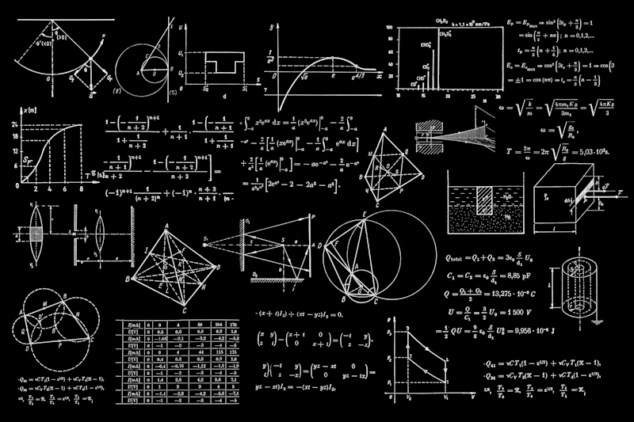
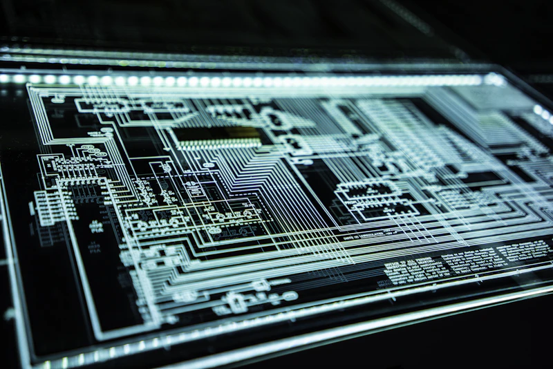

Building the infrastructure of tomorrow.

Neural Dashboard Architecture
A high-density telemetry system designed for real-time neural monitoring and behavioral shifts.

Quantum Logic Infrastructure
Optimizing high-frequency data streams through quantum-layered synchronization protocols.

Scalable Core Infrastructure
A distributed cloud backbone designed for global resilience and self-healing node networks.
Elite Mobile Ecosystem
A premium lifestyle management interface using custom physics-based animations and minimalist bento logic.

Shielded Cyber Protocol
A self-healing security mesh developed for distributed neural processing nodes.
Visual Analytics Engine
Transforming raw technical datasets into interactive 3D landscapes for C-suite architectural clarity.